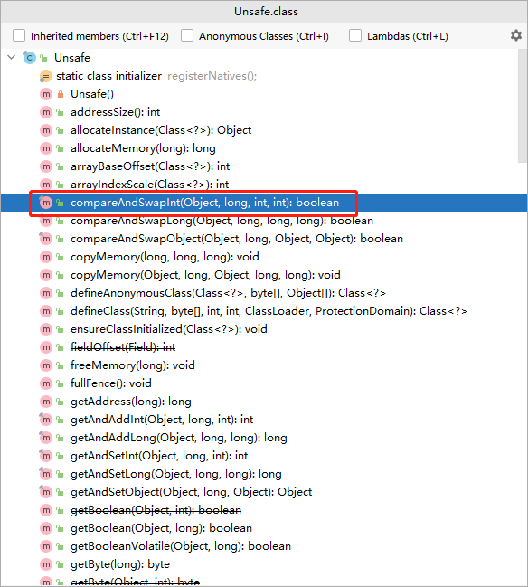
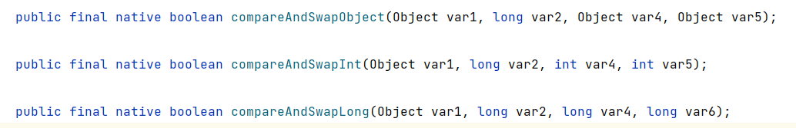
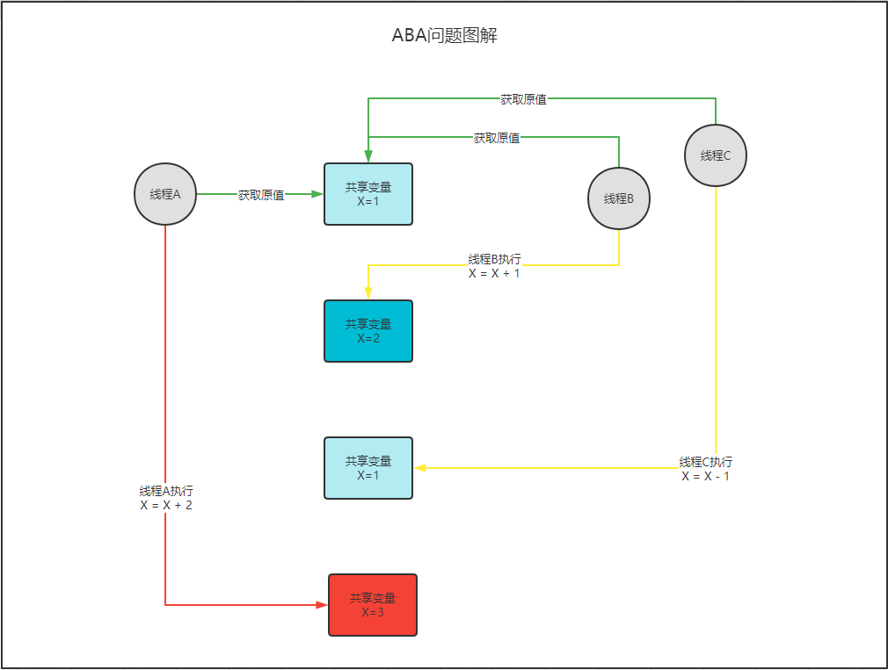
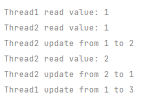
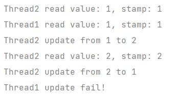

CAS
CAS(Compare And Swap，比较并交换)，通常值的是一种原子操作，针对一个变量，首先比较它的内存值与某个期望值是否相同，如果相同就给它赋值另一个值。正所谓比较并交换。
CAS是一种无锁算法，在不使用锁（没有线程被阻塞）的情况下实现多线程之间的变量同步。if(value == ‘内存中的值’) { value = new }
接下来我看下一个在理解CAS时很常见的一个例子
1 | private volatile static int sum = 0; |
运行上面的代码可以看到，最终得到的结果和我们预期结果并不一样，我们预期100000，但是最终运行结果始终比其小，且每次执行结果还不一样。从线程并发角度分析，上面的方法是存在并发安全问题的。
分析：
- 获取变量值进行累加
- 将累加结果赋值给原对象
那么，如果线程A在获取变量值进行累加同时，线程B也获取到了变量值进行累加，这时线程B先完成计算将结果赋值给原对象，随后线程A完成计算进行结果赋值，那最终原变量的值只增加了1，但实际上线程A和线程B分别进行了累加，我们期望结果是累加2，这就是很明显和我们预期不符。
解决方法：
个人分为两类：一类是加锁
加锁
synchronized，最简单粗暴，重量级锁，对性能影响较大1
2
3
4
5
6// 将进行计算的操作进行加锁，可以解决此问题
synchronized (object) {
for (int j = 0; j < 10000; j++) {
sum++;
}
}使用
ReentrantLock1
2
3
4
5
6
7
8
9
10
11
12// 定义一个锁
static ReentrantLock lock = new ReentrantLock();
// 给累加计算操作加锁，这个在每次计算结束后，要在finally的第一行进行解锁
lock.lock();
try {
for (int j = 0; j < 10000; j++) {
sum++;
}
} finally {
lock.unlock();
}
第二类是原子操作：
使用
CAS进行原子操作自定义一个CAS锁，需要用到Unsafe类，

在这个类中定义了很多方法，我们要使用到的
public final native boolean compareAndSwapInt(Object var1, long var2, int var4, int var5)，根据方法名称compareAndSwapInt，大概可以猜到方法的作用是先进行比较，然后进行交换一个整数值。以
compareAndSwapInt为例，Unsafe的compareAndSwapInt方法接收 4 个参数，分别是：对象实例、内存偏移量、字段期望值、字段新值。该方法会针对指定对象实例中的相应偏移量的字段执行 CAS 操作。1
2
3
4
5
6
7
8
9
10
11
12
13
14
15
16
17
18
19
20
21
22
23
24
25
26// Unsafe工厂类，用户获取Unsafe对象和获取字段内存偏移量
public class UnsafeFactory {
/**
* 获取 Unsafe 对象
*/
public static Unsafe getUnsafe() {
try {
Field field = Unsafe.class.getDeclaredField("theUnsafe");
field.setAccessible(true);
return (Unsafe) field.get(null);
} catch (Exception e) {
e.printStackTrace();
}
return null;
}
/**
* 获取字段的内存偏移量
*/
public static long getFieldOffset(Unsafe unsafe, Class clazz, String fieldName) {
try {
return unsafe.objectFieldOffset(clazz.getDeclaredField(fieldName));
} catch (NoSuchFieldException e) {
throw new Error(e);
}
}
}1
2
3
4
5
6
7
8
9
10
11
12
13
14
15
16
17
18
19
20
21
22
23
24
25
26
27// 自定义CAS锁
public class CASLock {
//加锁标记
private volatile int state;
private static final Unsafe UNSAFE;
private static final long OFFSET;
static {
try {
UNSAFE = UnsafeFactory.getUnsafe();
OFFSET = UnsafeFactory.getFieldOffset(
UNSAFE, CASLock.class, "state");
} catch (Exception e) {
throw new Error(e);
}
}
// 进行CAS运算，返回boolean值
public boolean cas() {
return UNSAFE.compareAndSwapInt(this, OFFSET, 0, 1);
}
public int getState() {
return state;
}
public void setState(int state) {
this.state = state;
}
}用自定义的CAS锁解决上述问题
1
2
3
4
5
6
7
8
9
10
11
12
13
14
15static CASLock casLock = new CASLock();
// 自旋尝试获取锁
for(;;){
// 获取到锁，casLock.cas()进行CAS操作，返回的是原值
if (casLock.getState() == 0 && casLock.cas()) {
try {
for (int j = 0; j < 10000; j++) {
sum++;
}
} finally {
casLock.setState(0);
}
break;
}
}
CAS应用
看一下UnSafe中常用的几个方法
compareAndSwapInt(Object var1, long var2, int var4, int var5)compareAndSwapObject(Object var1, long var2, Object var4, Object var5)compareAndSwapLong(Object var1, long var2, long var4, long var6)

这几个方法都是native方法，这是由java虚拟机提供具体的方法实现，这说明每个方法在不同的虚拟机中的实现可能会略有不同。
他们接收的参数都是对象实例、内存偏移量、字段期望值、字段新值，这四个参数。方法会针对指定对象实例中的相应偏移量的字段执行 CAS 操作。
CAS分析
虚拟机对compareAndSwapInt的实现采用的是C++编写的，此处不做说明，不过我们要知道
不管是 Hotspot 中的 Atomic::cmpxchg 方法（实现CAS操作的关键方法），还是 Java 中的 compareAndSwapInt 方法，它 们本质上都是对相应平台的 CAS 指令的一层简单封装。CAS 指令作为一种硬件原语，有着天然 的原子性，这也正是 CAS 的价值所在。
CAS缺陷
CAS高效解决了原子操作的问题，但是也存在一些问题
- 自旋操作如果长时间不成功，会给CPU带来很大的开销
- CAS只能同时保证一个共享变量的原子操作
- ABA问题
ABA问题
什么是ABA问题，首先我们理解了CAS，会在最终赋值前先进行比较，判断共享变量的初始值和计算后的值是否相同，相同才会赋值成功，否则会失败。那么如果存在这样一种情况，线程A首先获取了共享变量的值，然后进行相应的操作，在线程A执行过程中，线程B也获取到了共享变量的值，对共享变量的值增加了1并完成了赋值，紧接着线程C获取共享变量的值并对变量值减1，并完成赋值。在B和C都完成操作后，线程A才执行完成，在赋值前判断共享变量的值是否发生变更，因为线程B和线程C的操作正好互补，对于线程A来说共享变量的值并未发生变化，此时线程A会赋值成功。类似的情况就称为ABA问题。看图理解一下：

1 | // ABA问题 |
输出结果，出现ABA问题。

解决方案
类比数据库中的乐观锁的情况，基于数据版本实现数据同步的机制，每次修改一次数据，版本号进行累加。
java中提供的原子引用类AtomicStampedReference<V>
1 | public static void main(String[] args) { |


...
...
Copyright 2021 sunfy.top ALL Rights Reserved